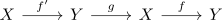

Whitehead theorem
Proposition
let $f: X \rightarrow Y$ be a weak homotopy equivalence of CW-Complexes $X,Y$. Then $f$ is a Homotopy equivalence
Proof
usnig general whitehead theorem we get a bijection
\begin{align*}
f_*: \pi_0( \mathrm{Map}(Y,X) \rightarrow \pi_0\mathrm{Map}(Y,Y)
\end{align*}
Then there exists a preimage $g: Y \rightarrow X$ such that
\begin{align*}
[f \circ g] = [\mathrm{id}_Y]
\end{align*}
note that path components of a mapping space as homotopy class, hence we may write
\begin{align*}
f \circ g \cong \mathrm{id}_Y
\end{align*}
Since $g$ is a weak homotopy equivalence (cf. left inverse of an isomorphism as right inverse) it follows by analogous argument that there exists a
\begin{align*}
f': X \rightarrow Y
\end{align*}
such that
\begin{align*}
gf \simeq \mathrm{id}_X
\end{align*}
Therefore by the two out of six for homotopy equivalences

we are done
alternatively
- covariant weak yoneda on category htop